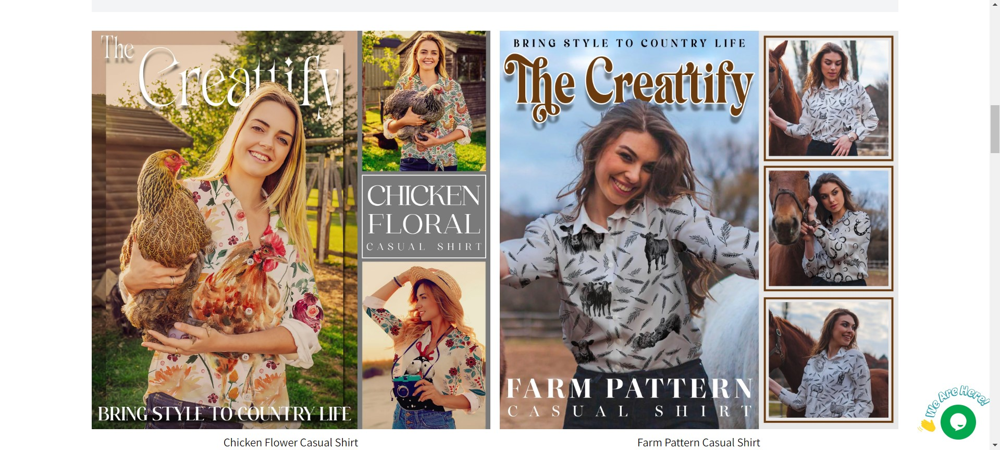
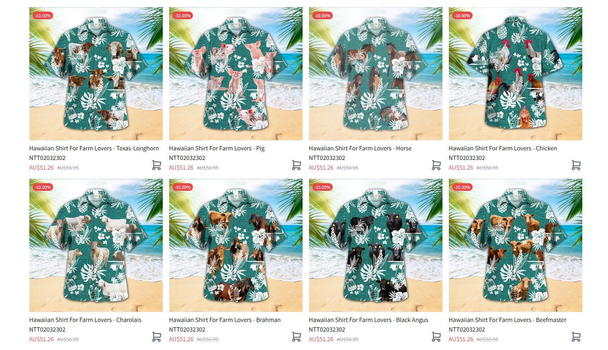

E-commerce Data and Marketing Analytics Manager
Gifttify Agency, Hanoi, Vietnam (Oct 2019 - Jan 2022)
I launched The Creattify in 2021, targeting farmers in the US. After several months of researching and analyzing, I found the best designs and products, which helped me generate over $1.8M in sales.

Product Development & Management: After researching, I found that farmers favored clothing with patterns and their favorite farm animals. My team and I created a collection featuring tropical patterns and popular farm animals, designing them into Hawaiian shirts for summer. This approach led to excellent sales results. Building on this success, I expanded the concept with new designs and product types, which further boosted sales.

Digital Marketing & Advertising: I ran targeted ad campaigns on Facebook and Google, successfully driving traffic and generating over 27,000 new customers and $1.8M in revenue.
Email Marketing: I implemented multiple email flows to recover abandoned checkouts and launched campaigns to encourage repeat purchases, increasing revenue by 25% through Klaviyo email campaigns.
Store Optimization: I hired Fiverr freelancers to take product photos, gather UGC content, and engaged influencers to promote my products.
Customer Experience & Optimization: I use A/B testing and analytics tools to enhance the customer experience and collect reviews to build trust with new customers.